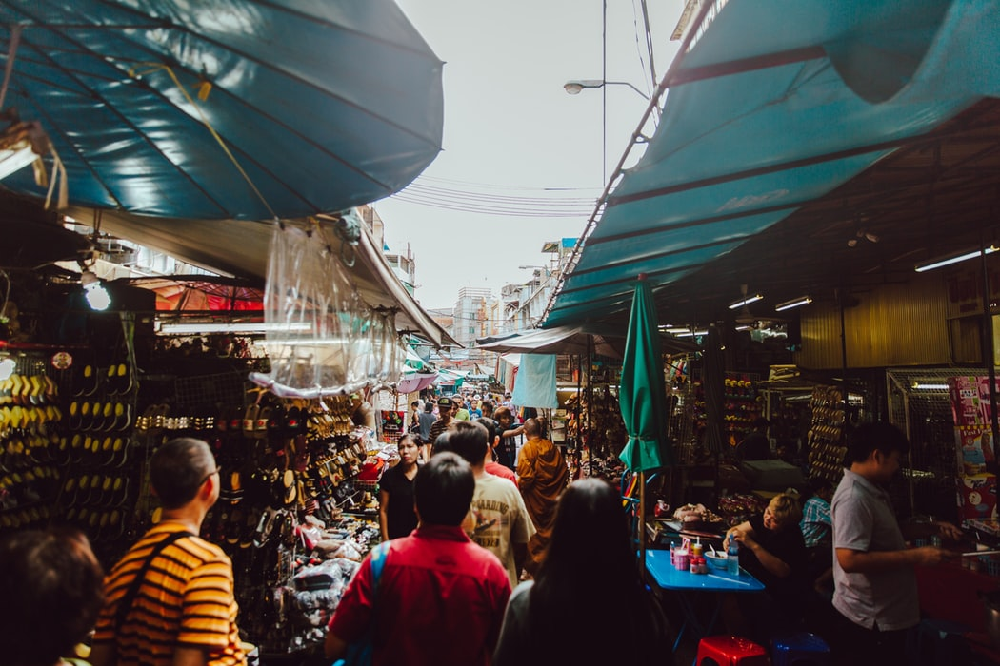
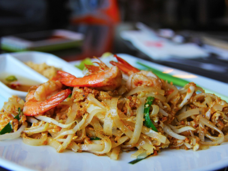
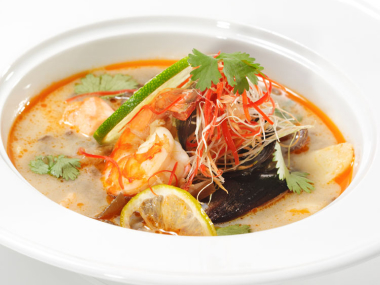
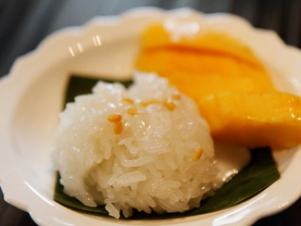
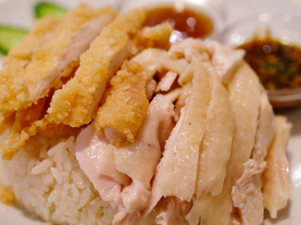
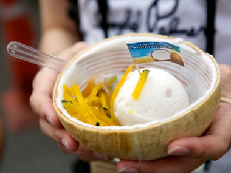

BANGKOK STREET FOOD GUIDE
Bangkok is one of the has some of the most famous street foods world-wide and you will discover that everywhere you look there is plenty of delicious foods to try as you explore the city.
A common saying in Thailand is that the less you pay for the food the better it is, and their street foods are very cheap and surprisingly delicious. Throughout the day, locals crowd around sidewalk carts and stalls, slurping noodles or devouring delicacies for just a few pennies. If you're not sure what to eat, follow the locals!
Must-Try list of local street food for authentic experience
-

Pad Thai
This stir-fried noodle dish, known as Pad Thai, has a right balance between spicy and sweet, as well as slight sourness from tamarind and lime.
-

Tom Yum Goong
This is a kind of hot and sour Thai soup, usually cooked with shrimp or chicken, is called Tom yum. Made with coconut milk, basil, chilis, tamarind, and lime juice, this dish boasts sweet and spicy flavours with undertone of sour.
-

Mango Sticky Rice
It popular Thai dessert is served on food stalls devoted to mango sweets, typically in the first mango season in the summer months. This platter consists of glutinous rice pulled in coconut milk and served with a sliced mango on the side. Remember that it is better to eat mango sticky rice right away as the rice will harden and fruit spoil in the summer heat.
-

Khao Man Gai
Thai Chicken Over Rice is a renowned street food dish that is spread throughout many parts of Asia. In the Thai edition, rice is cooked in a fatty chicken broth with a tender boiled chicken, crisp vegetables (usually cucumber), and a fiery green sauce. The option of fried chicken cutlet, or boiled chicken, or mixed can be served at certain stalls.
-

Coconut Ice Cream in a Coconut
This can be found on any street, vendors serve you a delicious snack in a coconut bowl shell, topped with your choice of sprinkles from dried coconut chips, peanuts, fresh coconut flesh and condensed milk, with a scoop of coconut ice cream. This is perfect for the warm bangkok weather to be enjoyed year-round.